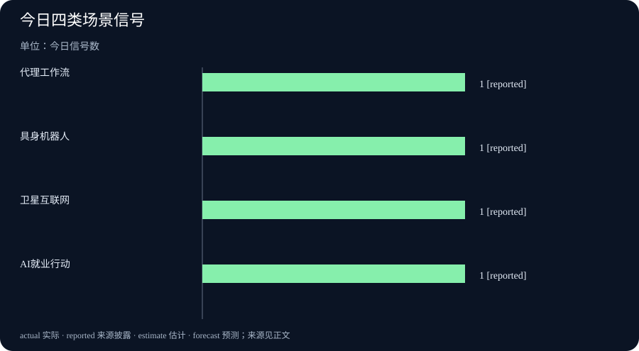

Daily Intelligence｜从试点走向场景
2026-10-11｜Asia/Shanghai｜早间版。检索锚点为 2026-10-11 06:56:58+08:00，回看此前 24 小时。10 月 10 日来源中，卫星发射页面给出精确到 03:27 的时间，数字中国建设峰会页面给出 09:54、10:37 和 14:49 的发布时间；OpenAI Academy页面标注 10 月 10 日。本文优先使用这些时间可核验的一手或官方页面，并区分政策发布、产品活动与已实现结果。
Today’s Thesis｜今天的判断
10 月 10 日的新闻共同指向“场景化”：卫星互联网进入一次具体发射，人工智能就业行动进入政策安排，人形机器人进入零售和文旅试用，OpenAI把代理式工作方法放进新闻机构培训。但从“出现”到“形成产业闭环”仍有距离。今天最值得看的不是部署数量，而是任务是否稳定、成本是否可承受、谁负责异常以及用户能否在失败时接管。
Executive Summary｜先看三条变化
- 具身智能出现商业场景：数字中国建设峰会转载的报道显示，人形机器人在零售、文旅场景出现批量试用；报道同时提醒，出货统计可能包含科研采购和展示样机，商业付费占比仍待验证。数字中国报道
- AI就业政策强调适应与培训：官方页面 10 月 10 日 14:49 发布消息，提出 AI 促就业、技能培训、农民工就业和公共服务行动。行动计划是政策安排，不是就业结果。数字中国就业行动
- 基础设施继续扩展：中国国家航天局页面记录，10 月 10 日 03:27 成功发射卫星互联网低轨 27 组卫星。一次成功发射证明任务完成，不等于网络覆盖、商业服务或现金流已经兑现。中国国家航天局
AI Daily｜AI 与产品
OpenAI Academy在 10 月 10 日发布面向新闻机构的 ChatGPT Work 介绍活动回放。页面把重点放在从回答问题转向推动多步骤工作，展示 agents、skills 和 plugins 如何帮助研究、分析、规划与重复流程。活动回放是教育与产品说明，不是独立效果评估，也没有给出新闻机构采用后的准确率或成本数据。OpenAI Academy
这类培训把代理产品的价值单位从单次输出换成工作流。对新闻编辑部而言，真正的验收不应是“能否生成一篇文章”，而应是能否把来源检索、事实核查、版本记录、编辑审批和发布撤回接成一条可追踪链。若插件可以访问外部系统，还必须明确权限、日志保留和人工复核边界。
数字中国建设峰会页面 10 月 10 日 10:37 转发关于发展新质生产力的 19 项举措，内容强调全面实施“人工智能+”、建设行业应用中试基地和高价值场景。政策把 AI 从模型能力连接到产业应用，但中试基地能否降低企业试错成本，要等具体项目的周期、质量和投资回报数据。新质生产力意见解读
Business Daily｜商业与产业
数字中国建设峰会 09:54 的报道引用 IDC 数据称，2026 年上半年全球人形机器人出货量接近 2.5 万台，中国超过 1.9 万台；零售、文旅、工业制造和物流成为新增场景。报道也给出重要边界：出货口径包含科研采购与展示样机，纯商业付费订单比例尚待提升，出货量不等于盈利。原始报道
机器人从展示品进入门店和景区，带来两个可验证问题。第一，开放环境中的抗干扰、自然交互和故障恢复是否达到运营要求；第二，租赁或机器人即服务的收费能否覆盖维护、远程监控和现场替换。报道提到 100 台设备进入门店、机器人进入景区，这是具体案例，却不能代表整个行业已经规模化盈利。
场景差异也意味着训练数据和评价标准不能一套通用。门店更看重排队、问询和促销任务的完成率，景区更看重路线安全与多语言交互，工业现场则更看重重复精度、停机风险和设备兼容。把这些任务混成一个“智能程度”分数，会遮蔽真正的采购判断。投资者和管理者应要求供应商给出按场景拆分的成功率、失败样本和维护承诺。
卫星互联网低轨 27 组卫星的发射由国家航天局页面确认，时间为北京时间 10 月 10 日 03:27，卫星进入预定轨道。对商业观察而言，发射是供应链和基础设施的一个节点，后续还要看在轨测试、组网节奏、终端价格、频谱和用户付费。国家航天局发布
Macro Observation｜宏观观察
AI 促就业行动把技术扩散与劳动力市场连接起来。培训、公共就业服务和“人力资源服务+”融合，说明政策关注的不只是技术供给，也关注劳动者如何适应岗位变化。短期内，这类行动更像供给侧准备；就业人数、工资、岗位质量和培训后的实际转岗率，才是后续宏观结果。官方消息
新质生产力意见同时强调能源革命和稳定、清洁、充裕的能源供给。算力、机器人、卫星和工业互联网都需要持续基础设施投入，因此技术投资的宏观影响会通过能源、设备、网络和人才多条链路传导。不能把一次政策发布或一次发射直接写成生产率增长，必须等待投资、产出和企业利润的连续数据。
卫星互联网的建设尤其需要长周期视角。一次发射可以验证制造、运输和发射流程，但网络商业化还受终端成本、频谱许可、地面站、覆盖密度和服务质量影响。若未来出现用户增长，也要区分一次性设备销售、政府或行业客户合同与稳定的月度订阅收入。只有这些指标连续改善，基础设施投资才可能转化为可观察的生产率和现金流。
Signal Dashboard｜信号仪表盘
| 信号 | 今日事实 | 边界 |
|---|---|---|
| 代理工作流 | OpenAI Academy介绍多步骤工作方法 | 活动回放，不是独立效果评估 |
| 具身智能 | 人形机器人进入零售、文旅试用 | 出货量不等于付费订单和盈利 |
| 卫星互联网 | 低轨 27 组卫星发射入轨 | 还需在轨测试、组网和商业服务 |
| AI就业 | 发布促就业与技能培训行动 | 政策安排，不等于就业结果 |
Deep Insight｜深度观察
场景化的下一关是责任链
当 AI 从聊天窗口进入门店、编辑部、工业现场和卫星网络，能力评估会变成系统评估。模型是否聪明只是其中一环，场景还要求传感器、网络、设备、数据和人员形成稳定协作。任何一个环节掉线，模型输出再流畅也无法完成任务。
以机器人导览为例，任务成功不只是说出一段正确介绍，还包括识别游客位置、避开障碍、在噪声环境中听清问题、遇到儿童或拥挤时保持安全距离，并在无法回答时把请求交给人工。若只统计出货数量，会漏掉最昂贵的运维和事故成本。对卫星互联网同理：卫星进入轨道后，还要经过测试、组网、终端连接、服务稳定性和资费验证。
OpenAI Academy的工作流案例提供了另一种对照。新闻机构使用代理时，来源链接、编辑权限、撤回机制和事实责任不能由模型自行决定。一个好的系统应该让编辑知道代理查了什么、用了哪些插件、哪一步产生了判断，并能在发布前暂停。生产力提升若以牺牲可追溯性为代价，最终可能把审校成本转移到发布之后。
代理工作流还会改变组织的分工。研究员可能不再从零开始整理材料，而是审核代理生成的检索路径；编辑可能把更多时间放在反例、利益冲突和语境判断上；工程团队则要保证权限、日志和回滚真的可用。若企业只购买一个聊天界面，却没有重新设计审批、归档和责任流程，所谓“多步骤工作”很容易退化成更快地产生未经核查的文本。
在开放网络环境中，代理还可能遭遇诱导内容、过期网页、恶意插件和与任务无关的私人信息。安全设计需要让代理知道哪些来源可信、哪些动作必须询问、哪些内容只能作为线索不能作为结论。对新闻机构而言，引用的每个事实都要回到可打开、可标注日期的原始页面；对企业而言，外部动作则要有明确的授权人与撤销入口。
AI促就业行动则把责任链扩展到社会层面。培训项目的结果不应只看课程人数，还要跟踪学员是否掌握可迁移技能、是否进入新岗位、收入是否变化，以及没有受益的人能否获得其他支持。政策、产品与产业新闻都在讲“应用”，但应用的真实含义是有人使用、有人承担后果，也有人能在失败时纠正系统。
Tomorrow Watch｜明日值得追踪
- 人形机器人案例是否公布持续运营时长、故障率、人工接管和单位服务成本。
- 卫星互联网低轨 27 组卫星的在轨测试、组网进度和终端服务信息。
- AI 促就业行动的培训规模、岗位转化率和地区执行指标。
- 代理工作流产品是否提供来源审计、权限控制和可逆发布机制。
One Chart｜一张图
本期图表只统计官方页面明确出现的四类“场景信号”，每类计数为 1，不代表市场规模、成功率或风险权重。

Quote of the Day｜今日引用
“The shift from AI that answers questions to AI that can carry work forward across multiple steps.”
— OpenAI Academy，面向新闻机构的 ChatGPT Work 活动介绍。出处
中文：从回答问题的 AI，转向能够跨多个步骤推动工作前进的 AI。这里是产品培训中的定位，不是对所有工作流已经实现自动化的实证判断。
Action Items｜今天值得思考什么
- 任务真的完成了吗？ 为机器人、代理和卫星服务分别定义任务完成、异常恢复和人工接管指标。
- 谁承担故障成本？ 把设备维护、数据错误、网络中断和错误发布的责任人写进项目验收文件。
- 出货等于收入吗？ 将机器人出货量与付费订单、使用时长、租赁收入和维护成本分开记录。
- 培训带来转岗了吗？ 追踪 AI 培训后的技能掌握、岗位变化、收入与未受益者支持，而不是只统计报名人数。
- 代理能被暂停吗？ 在插件、发布和外部动作前提供权限预览、日志和撤销路径，确保编辑或运营人员可以接管。
信息边界
本报告以 2026-10-11 06:56:58+08:00 为编写锚点，使用 10 月 10 日公开的官方和一手页面。政策安排、产品培训、产业报道和一次发射分别属于不同证据层级；出货、发射和活动介绍不写成已实现的普遍生产率或盈利结果。来源链接见各节。